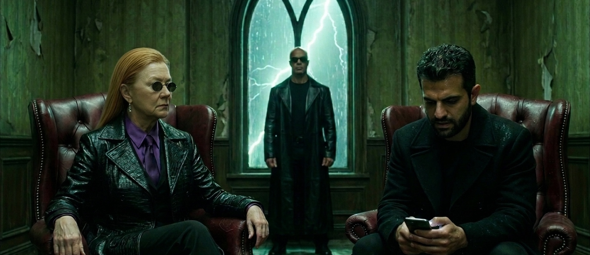
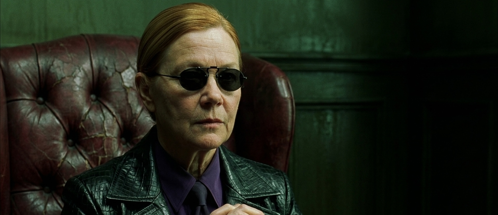
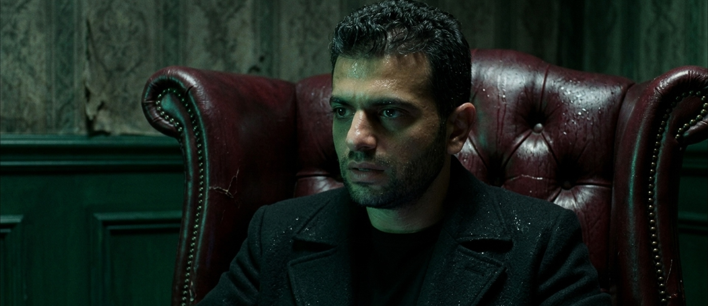
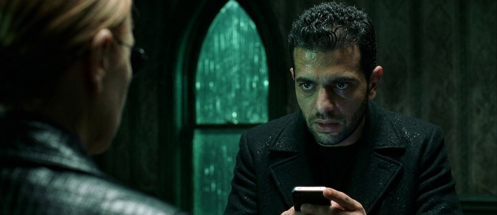
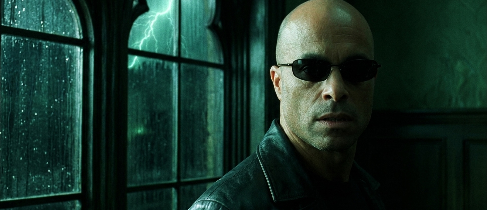
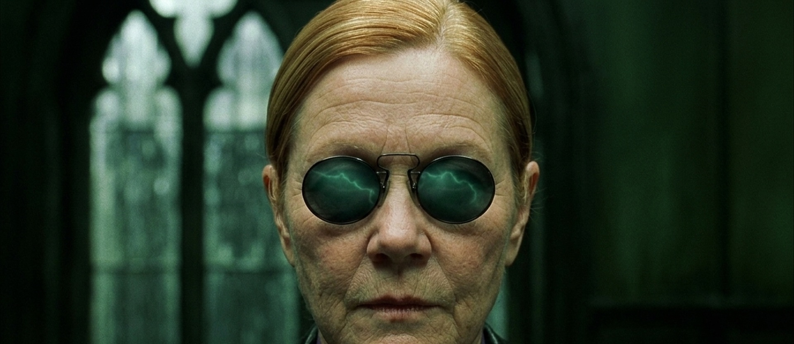
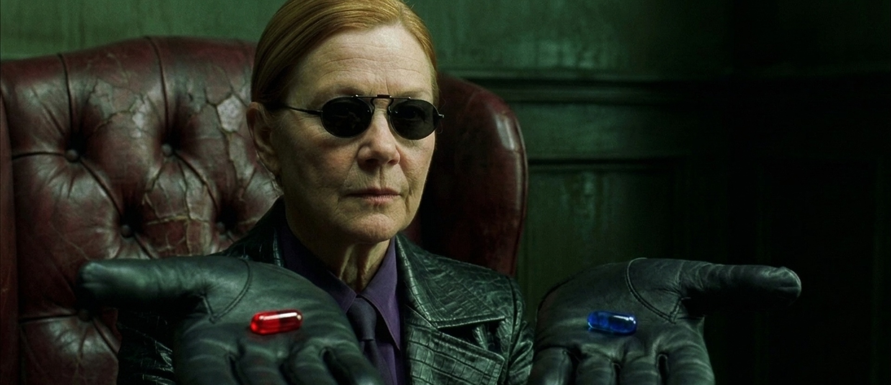
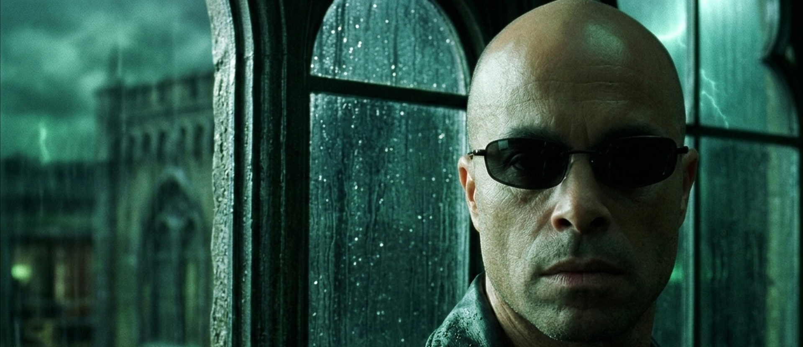
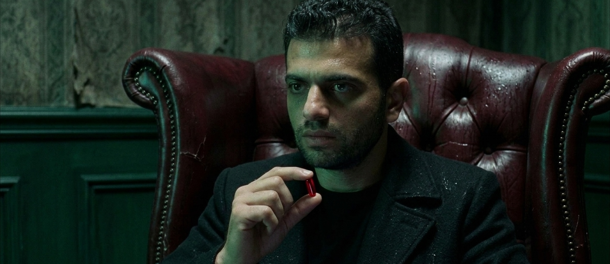
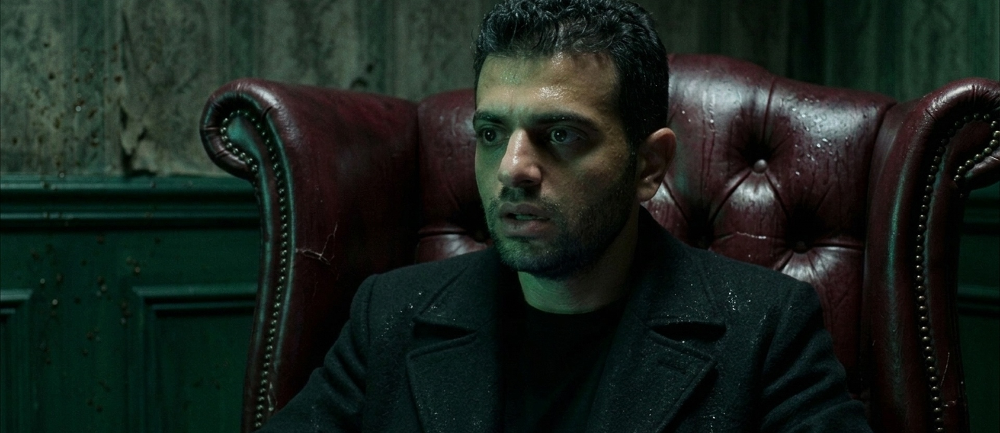

1999 Emerald-Green Noir · Tight-Cast v2.7: Gigi, Damon & Zach · Ingredient Prep: 11 Gold-Master + Derived ECU/OTS 21:9 Keyframes + Radio-Play QA + Wachowski Dry-Act & Don Davis Finale Spotting · Render Time: 24/24 Verified Hybrid Render (21 InfiniteTalk + 3 LTX-2.5 Dev)
Original movie frames extracted directly from the scene to match camera angles, lenses, lighting contrast, and color palette.
Every locked 21:9 keyframe anchor, dialogue line, and motion directive queued for rendering.

MX2_01 · fx (4.0s)
Keyframe: mx2_master_wide.jpg
Line: ""
Prompt: Photorealistic 1999 Wachowski 35mm emerald-tinted cyberpunk noir matching the starting frame. Static lock-off symmetrical emerald Lafayette Hotel establishing shot matching the starting frame: heavy rain sheets steadily down the tall arched gothic window with flickering green-white lightning behind motionless Damon while Gigi sits serenely as Morpheus in alligator coat on the left and hunched Zach grips his glowing smartphone on the right. Use static lock-off camera mounted on a heavy tripod, completely stationary framing. Real human skin pores, subtle 1999 Super 35 anamorphic film grain.

MX2_02 · gigi (11.9s)
Keyframe: mx2_master_gigi.jpg
Line: "Put the phone down, Zach. Look at yourself. You're sweating through your coat, your stomach is tearing itself apart, and you are still asking ChatGPT what to do."
Prompt: Photorealistic 1999 Wachowski 35mm emerald-tinted cyberpunk noir matching the starting frame. moody green-tinted storm lightning through rain-lashed arched hotel windows. Set context: Iconic 1999 Morpheus CU matching yt_10: Gigi left-of-center seated in cracked burgundy tufted leather armchair, wearing black alligator-textured leather trenchcoat, deep purple silk shirt & dark tie, armless round dark pince-nez sunglasses, emerald chiaroscuro storm lighting.. Use static lock-off camera mounted on a heavy tripod, completely stationary framing. Exact hair, hat, eyewear, costume, and set lighting preserved from the starting frame. ONLY the late-60s woman with strawberry-blonde hair styled as Morpheus in a black alligator leather trenchcoat, purple silk shirt, dark tie, and round dark pince-nez sunglasses on the left of frame actively speaks with natural jaw and lip articulation synced cleanly to the dialogue: "Put the phone down, Zach. Look at yourself. You're sweating through your coat, your stomach is tearing itself apart, and you are still asking ChatGPT what to do." maintaining stoic deadpan prestige gravity and closing mouth cleanly when dialogue finishes. Any other character visible in frame keeps their mouth completely CLOSED without speaking. Natural unhurried Hollywood performance with subtle shoulder breathing, authentic eye blinks, micro-head emphasis on stressed words, and expressive jaw articulation (never frozen, never goofy smiling). Steady storm rain streaks down arched gothic windowpanes while faint emerald-white lightning flickers off wet coats and eyewear. Real human skin pores, subtle 1999 Super 35 anamorphic film grain.

MX2_03 · zach (8.7s)
Keyframe: mx2_master_zach.jpg
Line: "Hold on—dude, this is a major deal! I'm typing my exact stomach symptoms into ChatGPT so it can rank my top five probabilities!"
Prompt: Photorealistic 1999 Wachowski 35mm emerald-tinted cyberpunk noir matching the starting frame. Moody, static emerald-tinted chiaroscuro interior lighting inside a dry, dimly lit peeling-wallpaper hotel room; completely still interior walls and background with zero rain, zero falling particles, and zero vertical streaks inside the room. Set context: Neo MCU matching yt_08: Zach framed right-of-center in rain-damp 1999 black wool coat sweating against shadowed emerald-green hotel wall while gripping glowing smartphone.. Use subtle organic 35mm handheld camera breathing with tiny operator micro-movements, maintaining fixed framing distance. Exact hair, hat, eyewear, costume, and set lighting preserved from the starting frame. ONLY the brown-bearded man in a rain-damp black wool 1999 Matrix coat sweating inside the cracked burgundy wingback chair on the right of frame actively speaks with natural jaw and lip articulation synced cleanly to the dialogue: "Hold on—dude, this is a major deal! I'm typing my exact stomach symptoms into ChatGPT so it can rank my top five probabilities!" showing anxious, panicked, grimacing urgency with worried furrowed brow, strained mouth, and desperate unsmiling urgency — NEVER smiling, NEVER grinning, zero cheerful expression and closing mouth cleanly when dialogue finishes. Any other character visible in frame keeps their mouth completely CLOSED without speaking. Natural unhurried Hollywood performance with subtle shoulder breathing, authentic eye blinks, micro-head emphasis on stressed words, and expressive jaw articulation (never frozen, never smiling, never grinning, anxious strained desperation throughout). Completely dry, static peeling emerald hotel room interior with zero water droplets, zero vertical lines, and still background lighting. Real human skin pores, subtle 1999 Super 35 anamorphic film grain.
MX2_04 · gigi (13.2s)
Keyframe: mx2_master_gigi.jpg
Line: "ChatGPT is the reason your intestines are failing, Zach. ChatGPT told you to eat midnight discount sushi. ChatGPT told you to chase it with three scoops of magnesium citrate."
Prompt: Photorealistic 1999 Wachowski 35mm emerald-tinted cyberpunk noir matching the starting frame. moody green-tinted storm lightning through rain-lashed arched hotel windows. Set context: Iconic 1999 Morpheus CU matching yt_10: Gigi left-of-center seated in cracked burgundy tufted leather armchair, wearing black alligator-textured leather trenchcoat, deep purple silk shirt & dark tie, armless round dark pince-nez sunglasses, emerald chiaroscuro storm lighting.. Use static lock-off camera mounted on a heavy tripod, completely stationary framing. Exact hair, hat, eyewear, costume, and set lighting preserved from the starting frame. ONLY the late-60s woman with strawberry-blonde hair styled as Morpheus in a black alligator leather trenchcoat, purple silk shirt, dark tie, and round dark pince-nez sunglasses on the left of frame actively speaks with natural jaw and lip articulation synced cleanly to the dialogue: "ChatGPT is the reason your intestines are failing, Zach. ChatGPT told you to eat midnight discount sushi. ChatGPT told you to chase it with three scoops of magnesium citrate." maintaining stoic deadpan prestige gravity and closing mouth cleanly when dialogue finishes. Any other character visible in frame keeps their mouth completely CLOSED without speaking. Natural unhurried Hollywood performance with subtle shoulder breathing, authentic eye blinks, micro-head emphasis on stressed words, and expressive jaw articulation (never frozen, never goofy smiling). Steady storm rain streaks down arched gothic windowpanes while faint emerald-white lightning flickers off wet coats and eyewear. Real human skin pores, subtle 1999 Super 35 anamorphic film grain.

MX2_05 · zach (8.5s)
Keyframe: mx2_zach_ots.jpg
Line: "It gave me a structured optimization protocol, Gigi! With bullet points! I can't just make a medical move without sending it to ChatGPT first!"
Prompt: Photorealistic 1999 Wachowski 35mm emerald-tinted cyberpunk noir matching the starting frame. moody green-tinted storm lightning through rain-lashed arched hotel windows. Set context: Neo MCU matching yt_08: Zach framed right-of-center in rain-damp 1999 black wool coat sweating against shadowed emerald-green hotel wall while gripping glowing smartphone.. Use subtle organic 35mm handheld camera breathing with tiny operator micro-movements, maintaining fixed framing distance. Exact hair, hat, eyewear, costume, and set lighting preserved from the starting frame. ONLY the brown-bearded man in a rain-damp black wool 1999 Matrix coat sweating inside the cracked burgundy wingback chair on the right of frame actively speaks with natural jaw and lip articulation synced cleanly to the dialogue: "It gave me a structured optimization protocol, Gigi! With bullet points! I can't just make a medical move without sending it to ChatGPT first!" maintaining stoic deadpan prestige gravity and closing mouth cleanly when dialogue finishes. Any other character visible in frame keeps their mouth completely CLOSED without speaking. Natural unhurried Hollywood performance with subtle shoulder breathing, authentic eye blinks, micro-head emphasis on stressed words, and expressive jaw articulation (never frozen, never goofy smiling). Natural over-the-shoulder f/2.2 cinema rack depth keeping foreground shoulder silhouette softly blurred while speaker stays razor-sharp. Steady storm rain streaks down arched gothic windowpanes while faint emerald-white lightning flickers off wet coats and eyewear. Real human skin pores, subtle 1999 Super 35 anamorphic film grain.

MX2_06 · damon (14.2s)
Keyframe: mx2_master_damon.jpg
Line: "Word. Fifty-six miles into an Aquabike—open-water swim straight into the aero tuck, no run. When your gut turns in fifty-four-degree water, there's no ChatGPT in your wetsuit, Zach. You make a call or you sink."
Prompt: Photorealistic 1999 Wachowski 35mm emerald-tinted cyberpunk noir matching the starting frame. moody green-tinted storm lightning through rain-lashed arched hotel windows. Set context: Trinity-style veteran MCU: Damon in sleek black leather Matrix trenchcoat & dark rectangular glasses standing silently beside rain-streaked gothic window in emerald storm light.. Use static lock-off camera mounted on a heavy tripod, completely stationary framing. Exact hair, hat, eyewear, costume, and set lighting preserved from the starting frame. ONLY the bald Black man wearing rectangular dark sunglasses and a black leather Matrix trenchcoat by the rainy gothic window in frame actively speaks with natural jaw and lip articulation synced cleanly to the dialogue: "Word. Fifty-six miles into an Aquabike—open-water swim straight into the aero tuck, no run. When your gut turns in fifty-four-degree water, there's no ChatGPT in your wetsuit, Zach. You make a call or you sink." maintaining stoic deadpan prestige gravity and closing mouth cleanly when dialogue finishes. Any other character visible in frame keeps their mouth completely CLOSED without speaking. Natural unhurried Hollywood performance with subtle shoulder breathing, authentic eye blinks, micro-head emphasis on stressed words, and expressive jaw articulation (never frozen, never goofy smiling). Steady storm rain streaks down arched gothic windowpanes while faint emerald-white lightning flickers off wet coats and eyewear. Real human skin pores, subtle 1999 Super 35 anamorphic film grain.
MX2_07 · zach (9.7s)
Keyframe: mx2_master_zach.jpg
Line: "Holy fudge, Damon, easy for you to say—you're an Aquabike cyborg! Let me just prompt ChatGPT to see if this cramp is urgent or just detox, lol!"
Prompt: Photorealistic 1999 Wachowski 35mm emerald-tinted cyberpunk noir matching the starting frame. Moody, static emerald-tinted chiaroscuro interior lighting inside a dry, dimly lit peeling-wallpaper hotel room; completely still interior walls and background with zero rain, zero falling particles, and zero vertical streaks inside the room. Set context: Neo MCU matching yt_08: Zach framed right-of-center in rain-damp 1999 black wool coat sweating against shadowed emerald-green hotel wall while gripping glowing smartphone.. Use subtle organic 35mm handheld camera breathing with tiny operator micro-movements, maintaining fixed framing distance. Exact hair, hat, eyewear, costume, and set lighting preserved from the starting frame. ONLY the brown-bearded man in a rain-damp black wool 1999 Matrix coat sweating inside the cracked burgundy wingback chair on the right of frame actively speaks with natural jaw and lip articulation synced cleanly to the dialogue: "Holy fudge, Damon, easy for you to say—you're an Aquabike cyborg! Let me just prompt ChatGPT to see if this cramp is urgent or just detox, lol!" showing anxious, panicked, grimacing urgency with worried furrowed brow, strained mouth, and desperate unsmiling urgency — NEVER smiling, NEVER grinning, zero cheerful expression and closing mouth cleanly when dialogue finishes. Any other character visible in frame keeps their mouth completely CLOSED without speaking. Natural unhurried Hollywood performance with subtle shoulder breathing, authentic eye blinks, micro-head emphasis on stressed words, and expressive jaw articulation (never frozen, never smiling, never grinning, anxious strained desperation throughout). Completely dry, static peeling emerald hotel room interior with zero water droplets, zero vertical lines, and still background lighting. Real human skin pores, subtle 1999 Super 35 anamorphic film grain.

MX2_08 · gigi (12.7s)
Keyframe: mx2_gigi_ecu.jpg
Line: "You are living inside a polite prison, Zach. A prison for your mind, and your colon. Every meal, every reply, every trip to the bathroom, outsourced to a prompt box."
Prompt: Photorealistic 1999 Wachowski 35mm emerald-tinted cyberpunk noir matching the starting frame. moody green-tinted storm lightning through rain-lashed arched hotel windows. Set context: Iconic 1999 Morpheus CU matching yt_10: Gigi left-of-center seated in cracked burgundy tufted leather armchair, wearing black alligator-textured leather trenchcoat, deep purple silk shirt & dark tie, armless round dark pince-nez sunglasses, emerald chiaroscuro storm lighting.. Use static lock-off camera mounted on a heavy tripod, completely stationary framing. Exact hair, hat, eyewear, costume, and set lighting preserved from the starting frame. ONLY the late-60s woman with strawberry-blonde hair styled as Morpheus in a black alligator leather trenchcoat, purple silk shirt, dark tie, and round dark pince-nez sunglasses on the left of frame actively speaks with natural jaw and lip articulation synced cleanly to the dialogue: "You are living inside a polite prison, Zach. A prison for your mind, and your colon. Every meal, every reply, every trip to the bathroom, outsourced to a prompt box." maintaining stoic deadpan prestige gravity and closing mouth cleanly when dialogue finishes. Any other character visible in frame keeps their mouth completely CLOSED without speaking. Natural unhurried Hollywood performance with subtle shoulder breathing, authentic eye blinks, micro-head emphasis on stressed words, and expressive jaw articulation (never frozen, never smiling, keeping an unsmiling, grave, motionless lower face between words). Shallow f/1.8 anamorphic focus isolating razor-sharp skin pores and eyes over creamy background bokeh. Slow imperceptible cinema push-in heightening dramatic gravity. Steady storm rain streaks down arched gothic windowpanes while faint emerald-white lightning flickers off wet coats and eyewear. Real human skin pores, subtle 1999 Super 35 anamorphic film grain.
MX2_09 · zach (7.0s)
Keyframe: mx2_master_zach.jpg
Line: "Wait, ChatGPT is still generating... o. m. g., it says I should monitor discomfort and hydrate mindfully!"
Prompt: Photorealistic 1999 Wachowski 35mm emerald-tinted cyberpunk noir matching the starting frame. moody green-tinted storm lightning through rain-lashed arched hotel windows. Set context: Neo MCU matching yt_08: Zach framed right-of-center in rain-damp 1999 black wool coat sweating against shadowed emerald-green hotel wall while gripping glowing smartphone.. Use static lock-off camera mounted on a heavy tripod, completely stationary framing. Exact hair, hat, eyewear, costume, and set lighting preserved from the starting frame. ONLY the brown-bearded man in a rain-damp black wool 1999 Matrix coat sweating inside the cracked burgundy wingback chair on the right of frame actively speaks with natural jaw and lip articulation synced cleanly to the dialogue: "Wait, ChatGPT is still generating... o. m. g., it says I should monitor discomfort and hydrate mindfully!" maintaining stoic deadpan prestige gravity and closing mouth cleanly when dialogue finishes. Any other character visible in frame keeps their mouth completely CLOSED without speaking. Natural unhurried Hollywood performance with subtle shoulder breathing, authentic eye blinks, micro-head emphasis on stressed words, and expressive jaw articulation (never frozen, never goofy smiling). Steady storm rain streaks down arched gothic windowpanes while faint emerald-white lightning flickers off wet coats and eyewear. Real human skin pores, subtle 1999 Super 35 anamorphic film grain.
MX2_10 · damon (6.0s)
Keyframe: mx2_master_damon.jpg
Line: "Your body is screaming at you in plain English, and you're waiting on a chatbot to write you a summary."
Prompt: Photorealistic 1999 Wachowski 35mm emerald-tinted cyberpunk noir matching the starting frame. moody green-tinted storm lightning through rain-lashed arched hotel windows. Set context: Trinity-style veteran MCU: Damon in sleek black leather Matrix trenchcoat & dark rectangular glasses standing silently beside rain-streaked gothic window in emerald storm light.. Use static lock-off camera mounted on a heavy tripod, completely stationary framing. Exact hair, hat, eyewear, costume, and set lighting preserved from the starting frame. ONLY the bald Black man wearing rectangular dark sunglasses and a black leather Matrix trenchcoat by the rainy gothic window in frame actively speaks with natural jaw and lip articulation synced cleanly to the dialogue: "Your body is screaming at you in plain English, and you're waiting on a chatbot to write you a summary." maintaining stoic deadpan prestige gravity and closing mouth cleanly when dialogue finishes. Any other character visible in frame keeps their mouth completely CLOSED without speaking. Natural unhurried Hollywood performance with subtle shoulder breathing, authentic eye blinks, micro-head emphasis on stressed words, and expressive jaw articulation (never frozen, never smiling, keeping an unsmiling, grave, motionless lower face between words). Steady storm rain streaks down arched gothic windowpanes while faint emerald-white lightning flickers off wet coats and eyewear. Real human skin pores, subtle 1999 Super 35 anamorphic film grain.
MX2_11 · zach (5.5s)
Keyframe: mx2_zach_ots.jpg
Line: "I literally don't know what to do if I don't ask ChatGPT! What if I make the wrong decision?!"
Prompt: Photorealistic 1999 Wachowski 35mm emerald-tinted cyberpunk noir matching the starting frame. moody green-tinted storm lightning through rain-lashed arched hotel windows. Set context: Neo MCU matching yt_08: Zach framed right-of-center in rain-damp 1999 black wool coat sweating against shadowed emerald-green hotel wall while gripping glowing smartphone.. Use subtle organic 35mm handheld camera breathing with tiny operator micro-movements, maintaining fixed framing distance. Exact hair, hat, eyewear, costume, and set lighting preserved from the starting frame. ONLY the brown-bearded man in a rain-damp black wool 1999 Matrix coat sweating inside the cracked burgundy wingback chair on the right of frame actively speaks with natural jaw and lip articulation synced cleanly to the dialogue: "I literally don't know what to do if I don't ask ChatGPT! What if I make the wrong decision?!" maintaining stoic deadpan prestige gravity and closing mouth cleanly when dialogue finishes. Any other character visible in frame keeps their mouth completely CLOSED without speaking. Natural unhurried Hollywood performance with subtle shoulder breathing, authentic eye blinks, micro-head emphasis on stressed words, and expressive jaw articulation (never frozen, never goofy smiling). Natural over-the-shoulder f/2.2 cinema rack depth keeping foreground shoulder silhouette softly blurred while speaker stays razor-sharp. Steady storm rain streaks down arched gothic windowpanes while faint emerald-white lightning flickers off wet coats and eyewear. Real human skin pores, subtle 1999 Super 35 anamorphic film grain.

MX2_12 · gigi (6.2s)
Keyframe: mx2_gigi_pills.jpg
Line: "This is your last chance, Zach. After this, there is no turning back."
Prompt: Photorealistic 1999 Wachowski 35mm emerald-tinted cyberpunk noir matching the starting frame. Moody, static emerald-tinted chiaroscuro interior lighting inside a dry, dimly lit peeling-wallpaper hotel room; completely still interior walls and background with zero rain, zero falling particles, and zero vertical streaks inside the room. Set context: Edited directly from MX2_GIGI matching yt_30: Gigi raising both black-gloved hands forward holding glowing red pill (left palm) and cobalt blue pill (right palm) reflected in her round pince-nez lenses.. Use static lock-off camera mounted on a heavy tripod, completely stationary framing. Exact hair, hat, eyewear, costume, and set lighting preserved from the starting frame. ONLY the late-60s woman with strawberry-blonde hair styled as Morpheus in a black alligator leather trenchcoat, purple silk shirt, dark tie, and round dark pince-nez sunglasses on the left of frame actively speaks with natural jaw and lip articulation synced cleanly to the dialogue: "This is your last chance, Zach. After this, there is no turning back." maintaining stoic deadpan prestige gravity and closing mouth cleanly when dialogue finishes. Any other character visible in frame keeps their mouth completely CLOSED without speaking. Natural unhurried Hollywood performance with subtle shoulder breathing, authentic eye blinks, micro-head emphasis on stressed words, and expressive jaw articulation (never frozen, never smiling, keeping an unsmiling, grave, motionless lower face between words). Completely dry, static peeling emerald hotel room interior with zero water droplets, zero vertical lines, and still background lighting. Real human skin pores, subtle 1999 Super 35 anamorphic film grain.
MX2_13 · gigi (10.9s)
Keyframe: mx2_gigi_pills.jpg
Line: "You take the blue pill, the story ends. It numbs your stomach, you go home, and tomorrow morning you ask ChatGPT what to eat for breakfast all over again."
Prompt: Photorealistic 1999 Wachowski 35mm emerald-tinted cyberpunk noir matching the starting frame. Moody, static emerald-tinted chiaroscuro interior lighting inside a dry, dimly lit peeling-wallpaper hotel room; completely still interior walls and background with zero rain, zero falling particles, and zero vertical streaks inside the room. Set context: Edited directly from MX2_GIGI matching yt_30: Gigi raising both black-gloved hands forward holding glowing red pill (left palm) and cobalt blue pill (right palm) reflected in her round pince-nez lenses.. Use static lock-off camera mounted on a heavy tripod, completely stationary framing. Exact hair, hat, eyewear, costume, and set lighting preserved from the starting frame. ONLY the late-60s woman with strawberry-blonde hair styled as Morpheus in a black alligator leather trenchcoat, purple silk shirt, dark tie, and round dark pince-nez sunglasses on the left of frame actively speaks with natural jaw and lip articulation synced cleanly to the dialogue: "You take the blue pill, the story ends. It numbs your stomach, you go home, and tomorrow morning you ask ChatGPT what to eat for breakfast all over again." maintaining stoic deadpan prestige gravity and closing mouth cleanly into a stern, solemn, deadpan expression with zero smile when dialogue finishes. Any other character visible in frame keeps their mouth completely CLOSED without speaking. Natural unhurried Hollywood performance with subtle shoulder breathing, authentic eye blinks, micro-head emphasis on stressed words, and expressive jaw articulation (never frozen, never smiling, keeping an unsmiling, grave, motionless lower face between words). Subtle emerald storm-lightning ambient reflections shimmer faintly across her dark pince-nez lenses inside the quiet dim hotel room. Real human skin pores, subtle 1999 Super 35 anamorphic film grain.
MX2_14 · gigi (10.7s)
Keyframe: mx2_gigi_pills.jpg
Line: "You take the red pill, you stay in Wonderland. We log you out of ChatGPT forever, and your body purges every single lie that algorithm ever fed you."
Prompt: Photorealistic 1999 35mm emerald-tinted cyberpunk noir matching the starting frame. Quiet, dry, dimly lit emerald-tinted vintage hotel room with solid still matte dark-green wood wall paneling and cracked burgundy leather armchair matching the starting frame exactly. Both black leather gloved palms remain completely stationary and steady in the lower foreground holding the glowing red capsule on the left and the cobalt blue capsule on the right throughout the entire shot. Exact hair, eyewear, black alligator trenchcoat, purple silk shirt, dark tie, and static tripod framing preserved from the starting frame. ONLY the late-60s woman with strawberry-blonde hair on the left of frame actively speaks with natural jaw and lip articulation synced cleanly to the dialogue: "You take the blue pill... we put you back onto sweet iced green tea, you ask ChatGPT what's wrong with your stomach, and you believe whatever it tells you." Austere, grave, deadpan solemnity with calm composed lip movement and closed mouth at the end. Natural unhurried Hollywood performance with subtle breathing and authentic eye blinks. Real human skin pores, subtle 1999 Super 35 anamorphic film aesthetics.

MX2_15 · damon (7.4s)
Keyframe: mx2_damon_tight.jpg
Line: "Think carefully, Zach. Just like mile forty on an Aquabike course—once you commit, there's no undo button."
Prompt: Photorealistic 1999 35mm emerald-tinted cyberpunk noir matching the starting frame. Quiet, dry, dimly lit emerald-tinted hotel interior matching the starting frame exactly; completely still dark architectural background behind Damon while he speaks with icy deadpan composure. Exact bald head, rectangular dark sunglasses, black leather trenchcoat, static tripod framing, and lighting preserved from the starting frame. ONLY the bald man in sunglasses and black leather trenchcoat actively speaks with natural jaw and lip articulation synced cleanly to the dialogue: "Careful, Zach. The blue pill puts you straight into urgent care for seven hundred dollars and a ginger ale." Icy, somber, unamused gravity with calm composed lip movement and soberly closed mouth at the end. Real human skin pores, subtle 1999 Super 35 anamorphic film aesthetics.
MX2_16 · zach (6.9s)
Keyframe: mx2_zach_ots.jpg
Line: "Okay, fudge, give me five seconds! Let me just ask ChatGPT whether red or blue has better side-effect reviews!"
Prompt: Photorealistic 1999 35mm emerald-tinted cyberpunk noir matching the starting frame. Completely still dimly lit emerald hotel room matching the starting frame; quiet matte wall panels and steady background. Exact brown-bearded young man in dark wool coat on the right clutching his smartphone and blurred left foreground shoulder preserved from the starting frame. ONLY the brown-bearded man on the right actively speaks with natural jaw articulation synced cleanly to the dialogue: "Seven hundred?! Okay—what does the red pill do? Does the red pill have better side-effect reviews!" Pale, frightened, wide-eyed worried frown, furrowed brow, tense somber mouth, downcast distressed gaze while clutching his smartphone; anxious tense desperation with focused jaw articulation and serious closed mouth at the end. Foreground left shoulder stays completely motionless with closed lips. Shallow f/2.2 anamorphic focus, real human skin pores, subtle 1999 Super 35 film aesthetics.
MX2_17 · gigi (6.5s)
Keyframe: mx2_gigi_ecu.jpg
Line: "No ChatGPT. No prompts. No summaries. Decide for yourself."
Prompt: Photorealistic 1999 Wachowski 35mm emerald-tinted cyberpunk noir matching the starting frame. moody green-tinted storm lightning through rain-lashed arched hotel windows. Set context: Iconic 1999 Morpheus CU matching yt_10: Gigi left-of-center seated in cracked burgundy tufted leather armchair, wearing black alligator-textured leather trenchcoat, deep purple silk shirt & dark tie, armless round dark pince-nez sunglasses, emerald chiaroscuro storm lighting.. Use static lock-off camera mounted on a heavy tripod, completely stationary framing. Exact hair, hat, eyewear, costume, and set lighting preserved from the starting frame. ONLY the late-60s woman with strawberry-blonde hair styled as Morpheus in a black alligator leather trenchcoat, purple silk shirt, dark tie, and round dark pince-nez sunglasses on the left of frame actively speaks with natural jaw and lip articulation synced cleanly to the dialogue: "No ChatGPT. No prompts. No summaries. Decide for yourself." maintaining stoic deadpan prestige gravity and closing mouth cleanly when dialogue finishes. Any other character visible in frame keeps their mouth completely CLOSED without speaking. Natural unhurried Hollywood performance with subtle shoulder breathing, authentic eye blinks, micro-head emphasis on stressed words, and expressive jaw articulation (never frozen, never smiling, keeping an unsmiling, grave, motionless lower face between words). Shallow f/1.8 anamorphic focus isolating razor-sharp skin pores and eyes over creamy background bokeh. Slow imperceptible cinema push-in heightening dramatic gravity. Steady storm rain streaks down arched gothic windowpanes while faint emerald-white lightning flickers off wet coats and eyewear. Real human skin pores, subtle 1999 Super 35 anamorphic film grain.

MX2_18 · zach (5.2s)
Keyframe: mx2_zach_redpill.jpg
Line: "...Fine. No ChatGPT. Give me the red pill."
Prompt: Photorealistic 1999 Wachowski 35mm emerald-tinted cyberpunk noir matching the starting frame. moody green-tinted storm lightning through rain-lashed arched hotel windows. Set context: Edited from MX2_ZACH: phone lying face-down on dark side table as Zach lifts the single red pill capsule in storm lightning.. Use static lock-off camera mounted on a heavy tripod, completely stationary framing. Exact hair, hat, eyewear, costume, and set lighting preserved from the starting frame. ONLY the brown-bearded man in a rain-damp black wool 1999 Matrix coat sweating inside the cracked burgundy wingback chair on the right of frame actively speaks with natural jaw and lip articulation synced cleanly to the dialogue: "...Fine. No ChatGPT. Give me the red pill." maintaining stoic deadpan prestige gravity and closing mouth cleanly when dialogue finishes. Any other character visible in frame keeps their mouth completely CLOSED without speaking. Natural unhurried Hollywood performance with subtle shoulder breathing, authentic eye blinks, micro-head emphasis on stressed words, and expressive jaw articulation (never frozen, never goofy smiling). Steady storm rain streaks down arched gothic windowpanes while faint emerald-white lightning flickers off wet coats and eyewear. Real human skin pores, subtle 1999 Super 35 anamorphic film grain.
MX2_19 · fx (3.7s)
Keyframe: mx2_zach_redpill.jpg
Line: ""
Prompt: Photorealistic 1999 Wachowski 35mm emerald-tinted cyberpunk noir matching the starting frame. Static lock-off close-up matching the starting frame: Zach raises his right hand, pops the single crimson capsule cleanly into his mouth and swallows hard, then immediately drops his completely EMPTY right hand out of frame below the lower edge while squinting tightly as green storm lightning illuminates his face in the burgundy wingback armchair. After swallowing, BOTH hands stay completely empty and lowered out of sight. Use static lock-off camera mounted on a heavy tripod, completely stationary framing. Real human skin pores, subtle 1999 Super 35 anamorphic film grain.
MX2_20 · fx (4.0s)
Keyframe: mx2_master_wide.jpg
Line: ""
Prompt: Photorealistic 1999 Wachowski 35mm emerald-tinted cyberpunk noir matching the starting frame. Static lock-off emerald hotel practical-FX shot matching the starting frame: frame 1 begins completely clean right after Zach swallows the red pill, then bright green-white lightning flashes outside the rainy gothic window as a catastrophic pressurized torrent of disgusting dark-brown chunky diarrhea blasts violently forward out of Zach's burgundy wingback chair across the hotel carpet while Zach grips both armrests stoically and Gigi & Damon watch in unblinking motionless composure. Use static lock-off camera mounted on a heavy tripod, completely stationary framing. Real human skin pores, subtle 1999 Super 35 anamorphic film grain.
MX2_21 · damon (4.5s)
Keyframe: mx2_damon_tight.jpg
Line: "Facts. Cleaner transition than my last Aquabike T-one."
Prompt: Photorealistic 1999 Wachowski 35mm emerald-tinted cyberpunk noir matching the starting frame. moody green-tinted storm lightning through rain-lashed arched hotel windows. Set context: Trinity-style veteran MCU: Damon in sleek black leather Matrix trenchcoat & dark rectangular glasses standing silently beside rain-streaked gothic window in emerald storm light.. Use static lock-off camera mounted on a heavy tripod, completely stationary framing. Exact hair, hat, eyewear, costume, and set lighting preserved from the starting frame. ONLY the bald Black man wearing rectangular dark sunglasses and a black leather Matrix trenchcoat by the rainy gothic window in frame actively speaks with natural jaw and lip articulation synced cleanly to the dialogue: "Facts. Cleaner transition than my last Aquabike T-one." maintaining stoic deadpan prestige gravity and closing mouth cleanly when dialogue finishes. Any other character visible in frame keeps their mouth completely CLOSED without speaking. Natural unhurried Hollywood performance with subtle shoulder breathing, authentic eye blinks, micro-head emphasis on stressed words, and expressive jaw articulation (never frozen, never smiling, keeping an unsmiling, grave, motionless lower face between words). Shallow f/1.8 anamorphic focus isolating razor-sharp skin pores and eyes over creamy background bokeh. Steady storm rain streaks down arched gothic windowpanes while faint emerald-white lightning flickers off wet coats and eyewear. Real human skin pores, subtle 1999 Super 35 anamorphic film grain.

MX2_22 · zach (6.0s)
Keyframe: mx2_zach_post.jpg
Line: "Holy fudge... I didn't ask ChatGPT. Not even once."
Prompt: Photorealistic 1999 Wachowski 35mm emerald-tinted cyberpunk noir matching the starting frame. moody green-tinted storm lightning through rain-lashed arched hotel windows. Set context: Edited from MX2_ZACH: stunned clear-eyed Zach exhaling softly in emerald storm afterglow with faint dark splatters on background baseboard.. Use static lock-off camera mounted on a heavy tripod, completely stationary framing. Exact hair, hat, eyewear, costume, and set lighting preserved from the starting frame. ONLY the brown-bearded man in a rain-damp black wool 1999 Matrix coat sweating inside the cracked burgundy wingback chair on the right of frame actively speaks with natural jaw and lip articulation synced cleanly to the dialogue: "Holy fudge... I didn't ask ChatGPT. Not even once." maintaining stoic deadpan prestige gravity and closing mouth cleanly when dialogue finishes. Any other character visible in frame keeps their mouth completely CLOSED without speaking. Natural unhurried Hollywood performance with subtle shoulder breathing, authentic eye blinks, micro-head emphasis on stressed words, and expressive jaw articulation (never frozen, never goofy smiling). Steady storm rain streaks down arched gothic windowpanes while faint emerald-white lightning flickers off wet coats and eyewear. Real human skin pores, subtle 1999 Super 35 anamorphic film grain.
MX2_23 · gigi (5.5s)
Keyframe: mx2_master_gigi.jpg
Line: "Because for the first time in years... you trusted your own gut, Zach."
Prompt: Photorealistic 1999 Wachowski 35mm emerald-tinted cyberpunk noir matching the starting frame. Moody, static emerald-tinted chiaroscuro interior lighting inside a dry, dimly lit peeling-wallpaper hotel room; completely still interior walls and background with zero rain, zero falling particles, and zero vertical streaks inside the room. Set context: Iconic 1999 Morpheus CU matching yt_10: Gigi left-of-center seated in cracked burgundy tufted leather armchair, wearing black alligator-textured leather trenchcoat, deep purple silk shirt & dark tie, armless round dark pince-nez sunglasses, emerald chiaroscuro storm lighting.. Use static lock-off camera mounted on a heavy tripod, completely stationary framing. Exact hair, hat, eyewear, costume, and set lighting preserved from the starting frame. ONLY the late-60s woman with strawberry-blonde hair styled as Morpheus in a black alligator leather trenchcoat, purple silk shirt, dark tie, and round dark pince-nez sunglasses on the left of frame actively speaks with natural jaw and lip articulation synced cleanly to the dialogue: "Because for the first time in years... you trusted your own gut, Zach." maintaining stoic deadpan prestige gravity and closing mouth cleanly with serene unsmiling stoic poise when dialogue finishes. Any other character visible in frame keeps their mouth completely CLOSED without speaking. Natural unhurried Hollywood performance with subtle shoulder breathing, authentic eye blinks, micro-head emphasis on stressed words, and expressive jaw articulation (never frozen, never smiling, keeping an unsmiling, grave, motionless lower face between words). Completely dry, static peeling emerald hotel room interior with zero water droplets, zero vertical lines, and still background lighting. Real human skin pores, subtle 1999 Super 35 anamorphic film grain.
MX2_24 · gigi (5.4s)
Keyframe: mx2_gigi_ecu.jpg
Line: "Welcome to the real world. Now stand up—we're burning that chair."
Prompt: Photorealistic 1999 Wachowski 35mm emerald-tinted cyberpunk noir matching the starting frame. Moody, static emerald-tinted chiaroscuro interior lighting inside a dry, dimly lit peeling-wallpaper hotel room; completely still interior walls and background with zero rain, zero falling particles, and zero vertical streaks inside the room. Set context: Iconic 1999 Morpheus CU matching yt_10: Gigi left-of-center seated in cracked burgundy tufted leather armchair, wearing black alligator-textured leather trenchcoat, deep purple silk shirt & dark tie, armless round dark pince-nez sunglasses, emerald chiaroscuro storm lighting.. Use static lock-off camera mounted on a heavy tripod, completely stationary framing. Exact hair, hat, eyewear, costume, and set lighting preserved from the starting frame. ONLY the late-60s woman with strawberry-blonde hair styled as Morpheus in a black alligator leather trenchcoat, purple silk shirt, dark tie, and round dark pince-nez sunglasses on the left of frame actively speaks with natural jaw and lip articulation synced cleanly to the dialogue: "Welcome to the real world. Now stand up—we're burning that chair." maintaining stoic deadpan prestige gravity and closing mouth cleanly when dialogue finishes. Any other character visible in frame keeps their mouth completely CLOSED without speaking. Natural unhurried Hollywood performance with subtle shoulder breathing, authentic eye blinks, micro-head emphasis on stressed words, and expressive jaw articulation (never frozen, never smiling, stern, austere, deadpan lower face with restrained natural lip articulation, zero grinning, zero bared-teeth grimace, lips closing soberly between phrases). Shallow f/1.8 anamorphic focus isolating razor-sharp skin pores and eyes over creamy background bokeh. Slow imperceptible cinema push-in heightening dramatic gravity. Completely dry, static peeling emerald hotel room interior with zero water droplets, zero vertical lines, and still background lighting. Real human skin pores, subtle 1999 Super 35 anamorphic film grain.